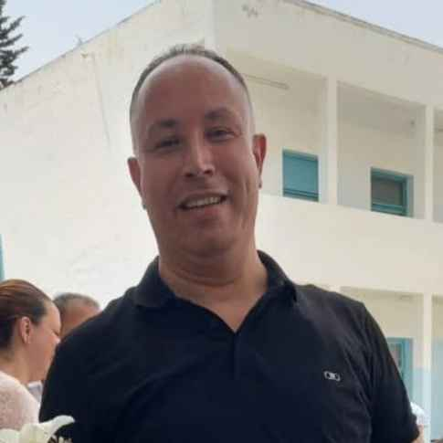
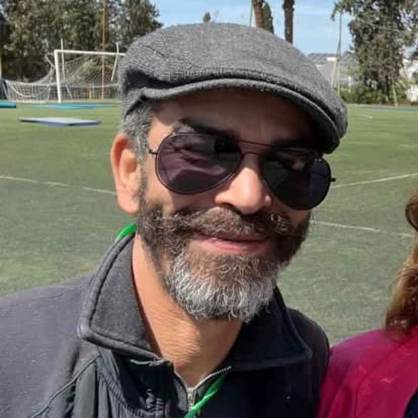
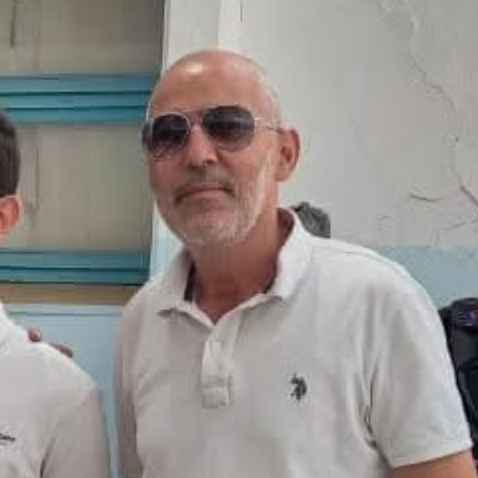
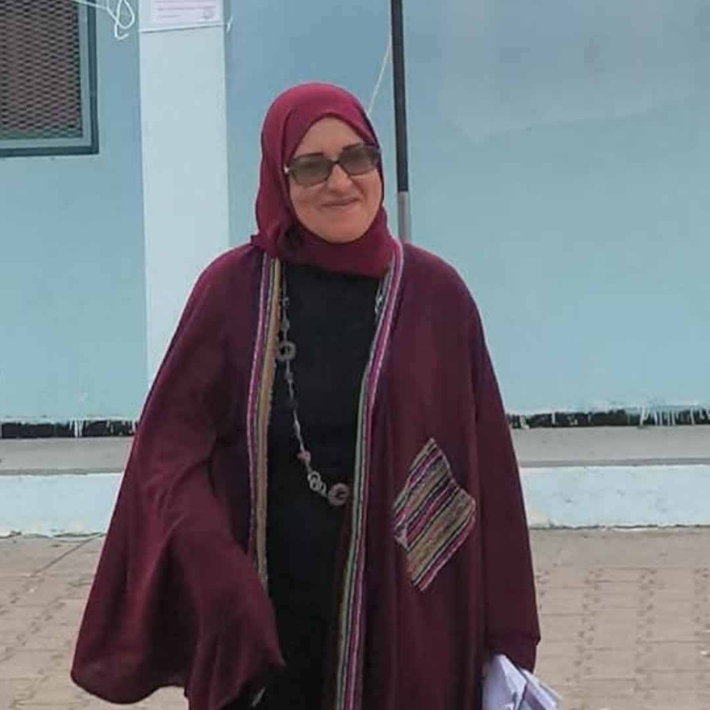

Présentation du Lycée Père Blanc
Le Lycée Père Blanc est un établissement scolaire étatique d’enseignement secondaire, situé à El Menzah 1, l’un des quartiers résidentiels les plus réputés de Tunis. Fondé dans une tradition d’excellence académique et de valeurs éducatives solides, le lycée se distingue par son cadre propice à l’apprentissage et son souci du développement intellectuel, social et moral des élèves.
Historique et valeurs
Fondé en 1970 par la congrégation des Père Blanc, le Lycée Père Blanc s’inscrit dans une longue tradition d’engagement éducatif. Depuis sa création, l’établissement met en avant des valeurs humanistes, prônant l’ouverture, la tolérance, et l’excellence académique. Il a su évoluer au fil des décennies pour répondre aux exigences éducatives modernes tout en restant fidèle à ses principes fondateurs.
Offre éducative
Le Lycée Père Blanc suit le programme du ministère tunisien de l’Éducation tout en enrichissant l’apprentissage par des activités extrascolaires variées, notamment dans les domaines des langues, des eco et des sciences.L’objectif est de former des élèves autonomes, responsables et prêts à poursuivre des études supérieures, aussi bien en Tunisie qu’à l’international.
Infrastructures
Le lycée est équipé de :
Un laboratoire scientifique et un laboratoire informatique
Un cadre verdoyant et calme, propice à la concentration
4 blocks avec des Salles de classe modernes et connectées
Une bibliothèque bien fournie
Organigramme D'administration

poste
nom d'admin
poste
nom d'admin


poste
nom d'admin
poste
nom d'admin
